หน้าปก: กรอบฟ้า (P1) และส้ม (P2) รอผู้เล่นครบ 2 คนยืนหน้ากล้อง
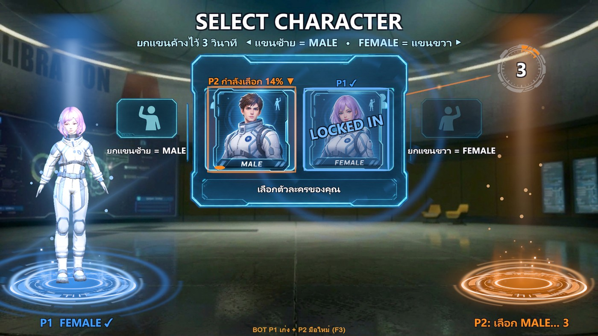
หน้าเลือกตัวละคร: ยกแขนซ้ายเลือก MALE แขนขวาเลือก FEMALE ค้าง 3 วินาที วงโหลดนับถอยหลังลอยเหนือหัวตัวละคร และหายไปเมื่อเลือกเสร็จ
เกมสำหรับผู้เล่น 2 คน ควบคุมด้วยร่างกายผ่านกล้อง ไม่ต้องใช้จอยหรือเมาส์ ประกอบด้วย 2 ภารกิจต่อเนื่องกัน เล่าเรื่องการทวงคืนลมหายใจในโลกที่ผู้คนชาชินกับการซื้ออากาศหายใจ
หลายสิบปีก่อน ความมักง่ายและการปล่อยปละละเลยทำให้มนุษย์ทิ้งขยะอิเล็กทรอนิกส์ทับถมซ้ำแล้วซ้ำเล่า จนโลหะหนักซึมทำลายหน้าดิน อากาศเต็มไปด้วยมลพิษ และต้นไม้ทุกต้นค่อย ๆ ล้มตายหายไปจากโลก ในยุคอนาคต ความเสียหายทั้งหมดกลายเป็นเรื่องปกติ ผู้คนสวมหมวกครอบศีรษะ แบกถังออกซิเจน และต่อแถวซื้ออากาศหายใจทุกเช้า
วันหนึ่งเด็กเพื่อนซี้ 2 คนพบสมุดบันทึกพฤกษศาสตร์เล่มเก่าในหอสมุดร้าง ที่บอกตำแหน่งแอ่งดินและตาน้ำใต้ดินแห่งสุดท้าย และเมล็ดพันธุ์สุดท้ายในแคปซูลสุญญากาศ ทั้งสองจึงคว้าเครื่องดูดขยะนิรภัย เคลียร์ถนนสู่แอ่งดิน แล้วใช้ปลอกแขนดึงน้ำใต้ดินและรวมแสงแดด ปลุกต้นกล้าให้เติบโตจนท้องฟ้าเปลี่ยนจากสีส้มเป็นสีฟ้าอีกครั้ง
| ช่วง | เกิดอะไรขึ้น | อารมณ์ที่ต้องการ |
|---|---|---|
| 1. โลกที่ชาชิน | หน้าปกและหน้าเลือกตัวละคร แนะนำเด็กทั้งสองและภารกิจ | อยากรู้ ตื่นเต้น |
| 2. ถนนสู่แอ่งดิน ภารกิจที่ 1 | ทั้งคู่แยกเลนซ้าย-ขวา เก็บขยะอิเล็กทรอนิกส์แข่งกับเวลา เพื่อหยุดสารพิษก่อนซึมลงดิน | เร่งเร้า ลุ้น สนุกแบบแข่งกัน |
| 3. ปลุกต้นไม้ต้นแรก ภารกิจที่ 2 + ฉากจบ | ส่งน้ำและแสงแดดอย่างสมดุลจนต้นไม้โตเต็มที่ แล้วเมืองทั้งเมืองเปลี่ยนเป็นสีเขียว | อบอุ่น ภูมิใจ ร่วมมือกัน |
แนวคิดหลัก: "โลกที่ความเสื่อมโทรมกลายเป็นเรื่องปกติ และจุดเริ่มต้นของการทวงคืนลมหายใจ" ผู้เล่น 2 คนร่วมกันย้อนกระบวนการทำลาย คือหยุดขยะอิเล็กทรอนิกส์ที่ทำลายดินและน้ำ แล้วประสานพลังปลุกต้นไม้ต้นแรก
| องค์ประกอบ | ในเกมของเรา |
|---|---|
| โลก | มหานครไร้ต้นไม้ ท้องฟ้าฝุ่นส้ม ขยะอิเล็กทรอนิกส์กองริมถนน |
| สีประจำผู้เล่น | P1 ฟ้า P2 ส้ม ใช้สีเดียวกันทุกหน้าจอ ตั้งแต่หน้าปก แท่นเลือกตัวละคร HUD ปืนดูด จนถึงหน้าสรุปผล |
| UI | กรอบโลหะสนิม แถบลายเตือนเหลือง-ดำ ไฟนีออน ป้ายอีเวนต์เป็นรูปภาพทั้งแผ่น ตัวอักษรขอบเข้มอ่านง่ายทุกพื้นหลัง แผงผู้เล่นมุมบนรวม หน้าตัวละครที่เลือก + หลอด AIR + SCORE ไว้ในกรอบเดียว |
| ภารกิจที่ 2 | กรอบไม้พันเถาวัลย์ สีเขียว-ทอง สื่อการฟื้นฟู แถบ NATURE BALANCE เป็นรูปรางไม้ น้ำ | ต้นอ่อน | แสงแดด พร้อมปุ่มคริสตัลต้นอ่อน |
| ตอนจบ | ฉากหลังเปลี่ยนเป็นเมืองที่ฟื้นแล้ว ฟ้าใส หญ้าเขียว แสงอาทิตย์ |
| ภารกิจ | แนวคิด | รูปแบบการเล่น |
|---|---|---|
| 1. Waste Hunters | แก้ปัญหาที่ต้นเหตุ: เก็บขยะอิเล็กทรอนิกส์ออกจากถนนให้มากที่สุดใน 90 วินาที ขยะที่อันตรายกว่าได้คะแนนมากกว่า ระหว่างนั้นต้องคอยเก็บลูกอากาศเติมหลอด AIR ของตัวเอง | แข่งกัน (P1 ปะทะ P2) แต่ปัดส่งลูกอากาศให้เพื่อนได้ และรวมผลเป็นค่า "CLEANER AIR" ของทีม |
| 2. The Last Seed | ส่งน้ำ (P1) และแสงแดด (P2) ให้เมล็ดพันธุ์สุดท้าย ต้นไม้โตเร็วที่สุดเมื่อส่งพร้อมกันและสมดุล | ร่วมมือ 100% ไม่มีผู้ชนะ ไม่จับเวลา เล่นจนต้นไม้โตเต็ม |
| หัวข้อ | รายละเอียด |
|---|---|
| รูปแบบ | เกม Interactive สำหรับ 2 คน เล่นหน้าจอใหญ่ ใช้กล้องจับโครงร่างกาย (Body Tracking) ยืนห่างกล้อง 2.5–3 เมตร ไม่ต้องถืออุปกรณ์ |
| การแบ่งฝั่ง | P1 ยืนฝั่งซ้ายของกล้อง P2 ยืนฝั่งขวา ยืนนิ่งในวงจุดยืนของตัวเอง 1 วินาทีระบบจึงล็อก (หน้าปกแสดง % การสแกน) ระบบล็อกผู้เล่นแต่ละคนไว้จนกว่าจะออกจากกล้อง คนอื่นเดินผ่านหรือยืนบังก็ไม่หลุด |
| มุมมอง | บุคคลที่หนึ่ง เห็นแขนที่ถือเครื่องดูด (โมเดล 3D) หรือแขนที่สวมปลอกแขน ขยับตามร่างกายจริง |
| แบ่งหน้าจอ | ภารกิจที่ 1 แบ่งซ้าย-ขวาคนละครึ่ง • ภารกิจที่ 2 หน้าจอรวม ต้นไม้อยู่ตรงกลาง |
| ช่วยผู้เล่นใหม่ | ทุกภารกิจเริ่มด้วยหน้าสอนเล่น 15 วินาที ระหว่างเล่นมีคำแนะนำท่า และภารกิจที่ 2 มีการ์ดเตือนท่ากับตัวช่วยเมื่อต้นไม้ไม่โต |
| หน้าสรุปผล | กรอบผลแบบการ์ด 2 ฝั่ง สีของผู้เล่น วงกลางแสดงเกจ และดาว 1–3 ดวง |
| แผงโครงกระดูก | กล่องเล็กแสดงโครงร่างกายสดของผู้เล่นแต่ละคน ให้รู้ว่ากล้องจับตัวเองได้อยู่ |
| เสียง | เพลงแยกตามช่วง (หน้าปก • ภารกิจ 1 • ภารกิจ 2 • ฉากจบ) จางข้ามเมื่อเปลี่ยน และเสียงเอฟเฟกต์ทุกจังหวะสำคัญ เช่น ดูดขยะ อีเวนต์ ส่งพลัง PERFECT SYNC ติ๊ก 5 วินาทีสุดท้าย เตือนหลุดกล้อง |

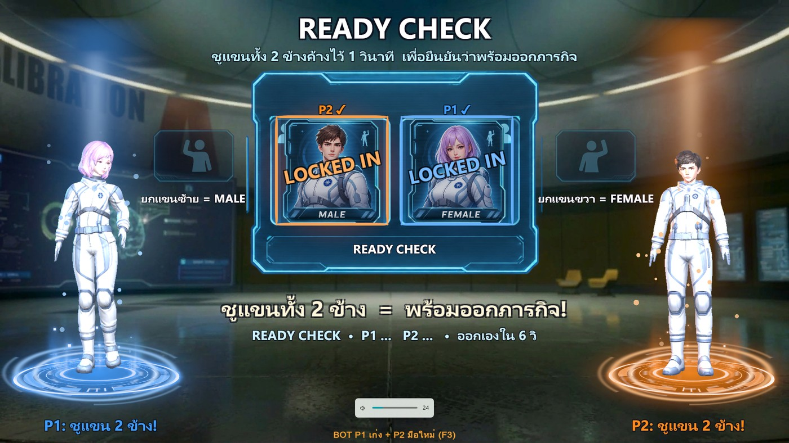
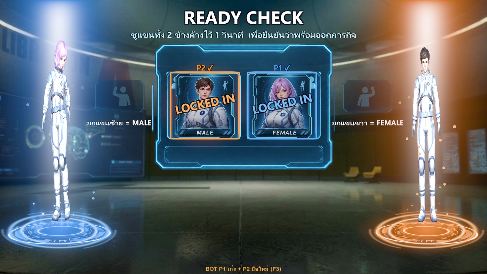
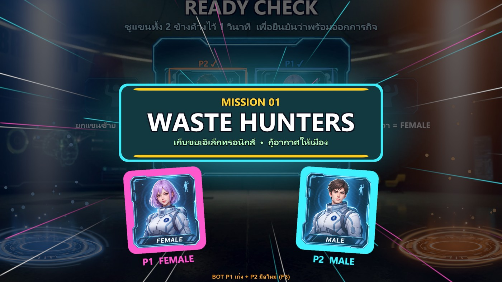
ผู้เล่นแต่ละคนเดินบนเลนถนนของตัวเอง ใช้เครื่องดูดขยะนิรภัยในมือเล็งแล้วดูดเก็บขยะ เล่นจนหมดเวลาเสมอ ไม่มีเป้าจำนวนชิ้นที่ทำให้เกมจบก่อน
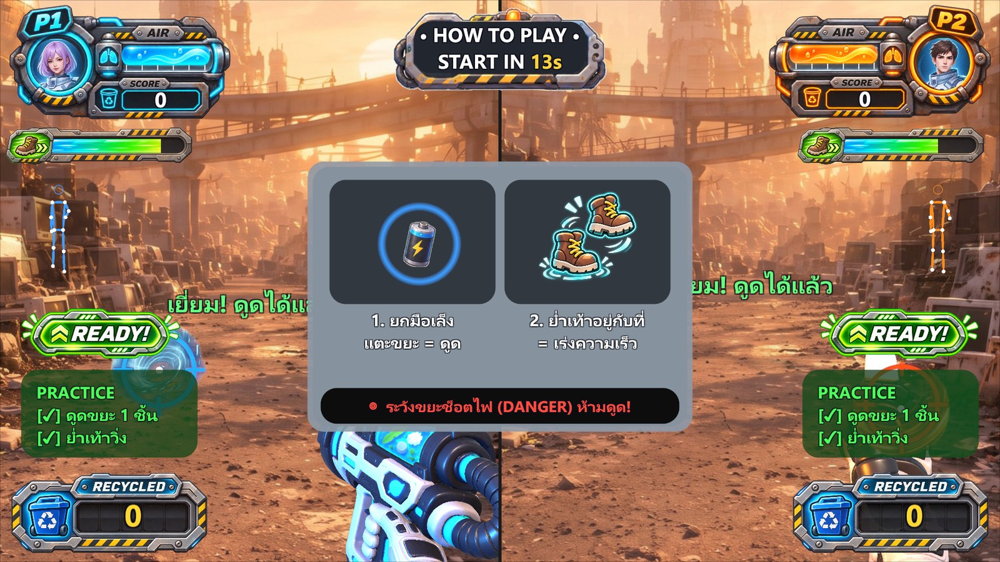
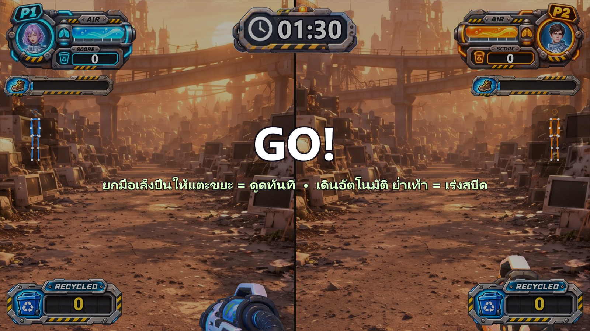
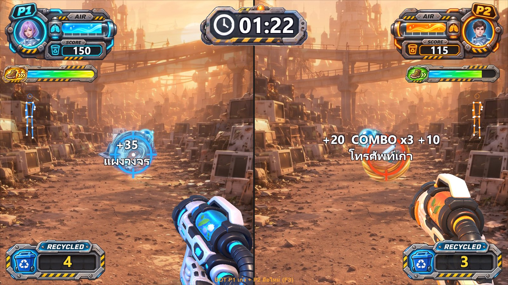
ระบบนี้ทำให้เรื่องราว "โลกที่ต้องซื้ออากาศหายใจ" กลายเป็นกติกาที่ผู้เล่นรู้สึกได้จริง แต่ละคนมีหลอด AIR 0–100% ของตัวเองในแผงผู้เล่น หลอดจะลดลงเองตลอดรอบ และต้องเก็บลูกอากาศที่ตกลงมากลางถนนเพื่อเติม ไม่มีเกมโอเวอร์ อากาศหมดแค่ทำให้อ่อนแรงชั่วคราว
| กติกา | ทำงานอย่างไร |
|---|---|
| อากาศลดเอง | ลด 1.6% ต่อวินาที (เต็มหลอดใช้ได้ราว 62 วินาที) ช่วง DUST STORM ลดเร็วขึ้น 1.5 เท่า ไม่ลดตอนสอนเล่นและนับถอยหลัง |
| ลูกอากาศ | ตกจากฟ้าลงกลางถนนในเลนตัวเองทุก 6–8 วินาที แล้วไหลเข้าหาผู้เล่นเหมือนขยะ ต้องเข้าระยะดูดก่อน เดินเลยไป = พลาด ถ้าอากาศต่ำกว่า 30% ลูกจะออกถี่ขึ้น (ทุก 4–5 วินาที) |
| เก็บอากาศ | เล็งค้างบนลูก 0.35 วินาที (มีวงโหลดรอบลูก) ลูกธรรมดา +30% ลูกใบไม้ (โบนัส โอกาส 15%) +50% |
| ส่งอากาศให้เพื่อน | ปัดมือแรง ๆ ผ่านลูกไปทางฝั่งเพื่อน ลูกจะพุ่งข้ามเส้นกลางจอไปโผล่ในเลนเพื่อน เพื่อนต้องเล็งรับภายใน 4 วินาที รับได้แล้วผู้ส่งได้ TEAM +15 คะแนน |
| อากาศใกล้หมด | ต่ำกว่า 25%: หลอดเปลี่ยนเป็นสีแดงกะพริบ ขอบจอแดง และมีเสียงเตือน |
| อากาศหมด | "อ่อนแรง": วงดูดเล็กลงครึ่งหนึ่ง และเดินช้าลงครึ่งหนึ่ง จนกว่าจะเก็บลูกอากาศได้ |
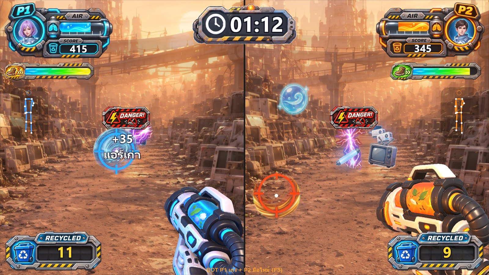
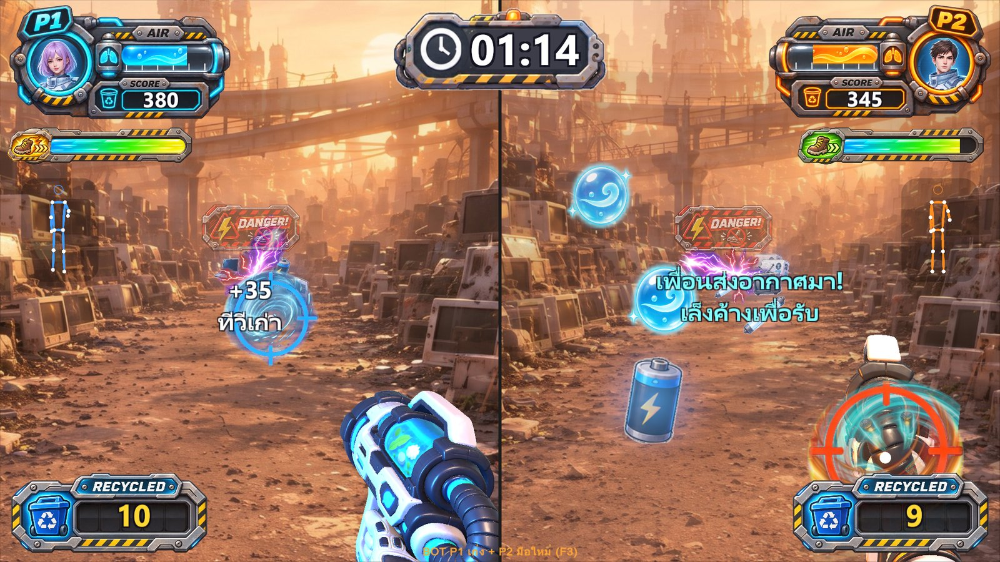
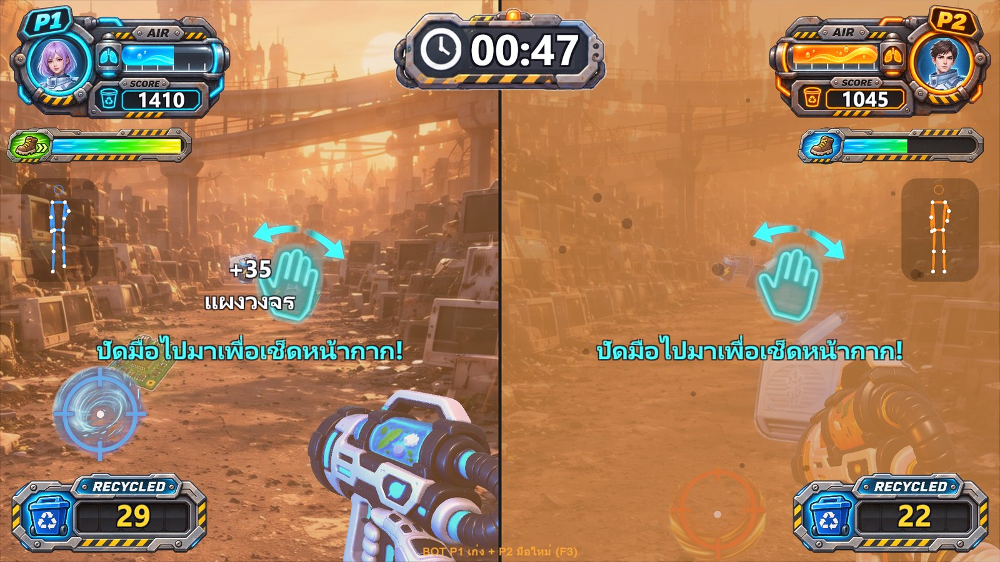
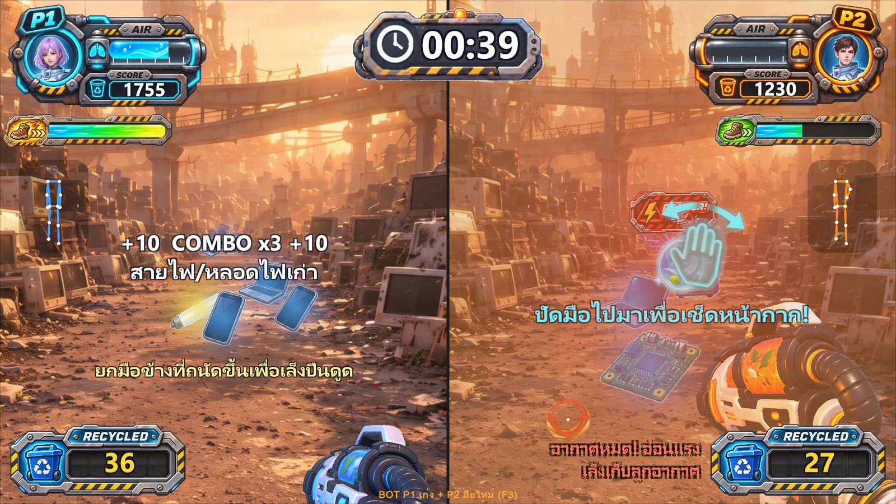
| ระดับอันตราย | ตัวอย่าง | คะแนน |
|---|---|---|
| ต่ำ | สายไฟ / หลอดไฟเก่า | 10 |
| ปานกลาง | โทรศัพท์เก่า | 20 |
| สูง | แผงวงจร คอมพิวเตอร์ ทีวี แอร์ | 35 |
| วิกฤต | แบตเตอรี่เก่า | 50 |
| ขยะพิเศษ (RARE) | เรืองแสงสีทอง อยู่บนจอไม่นาน | โบนัส +30 |
| อีเวนต์ | เกิดเมื่อ | ผล |
|---|---|---|
| DAILY DUMP FEVER | วินาทีที่ 20 และ 60 นาน 6 วินาที | โดรนทิ้งขยะเป็นกอง คะแนน x2 |
| DUST STORM | วินาทีที่ 40 | ฝุ่นบังหน้ากาก ต้องปัดมือไปมาเช็ด และอากาศลดเร็วขึ้น 1.5 เท่า |
| OVERDRIVE | Combo ครบ 8 ชิ้น | วงดูดใหญ่ขึ้น 1.6 เท่า ดูดหลายชิ้นพร้อมกัน 5 วินาที |
| DANGER / STUNNED | ขยะช็อตไฟโผล่ทุก 14–22 วินาที | ถ้าดูดจะโดนช็อต 2 วินาที เสียคะแนนและ Combo |
| FINAL RUSH | 20 วินาทีสุดท้าย | ขยะเกิดถี่ขึ้น ~1.8 เท่า คะแนน x2 นาฬิกาเป็นสีส้มและเต้น |
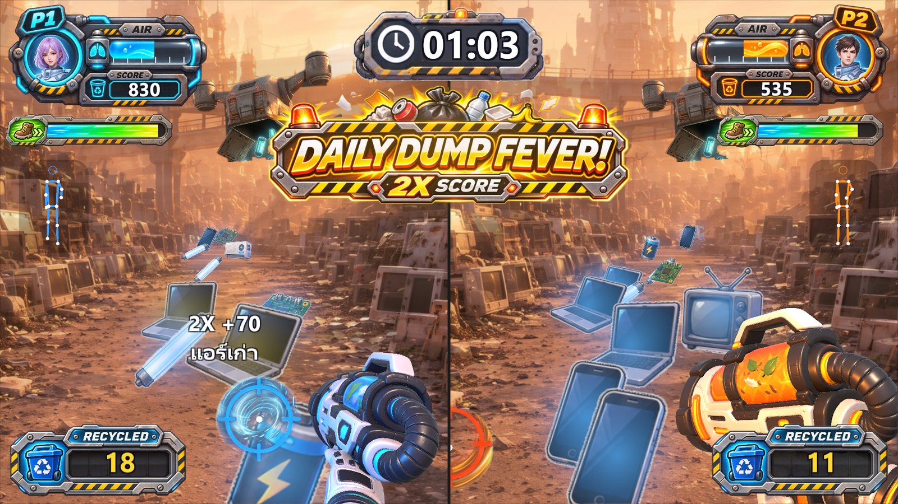
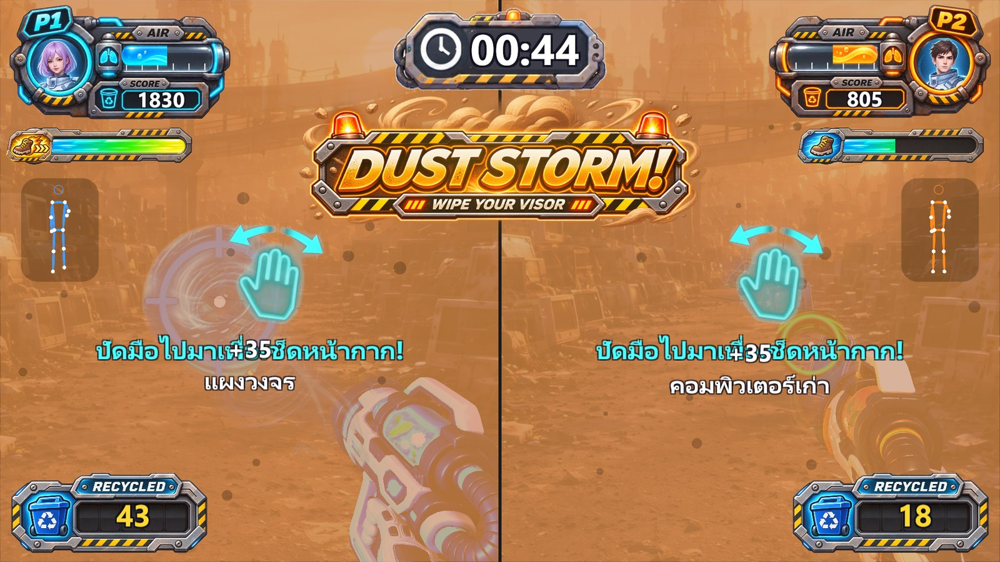
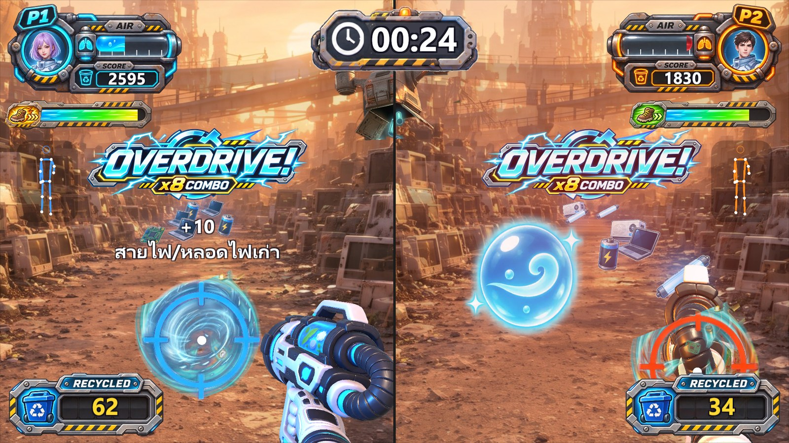
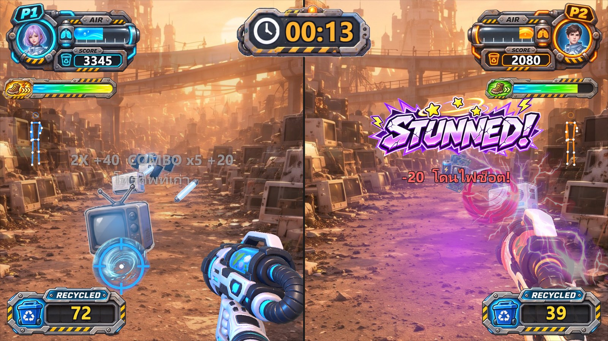
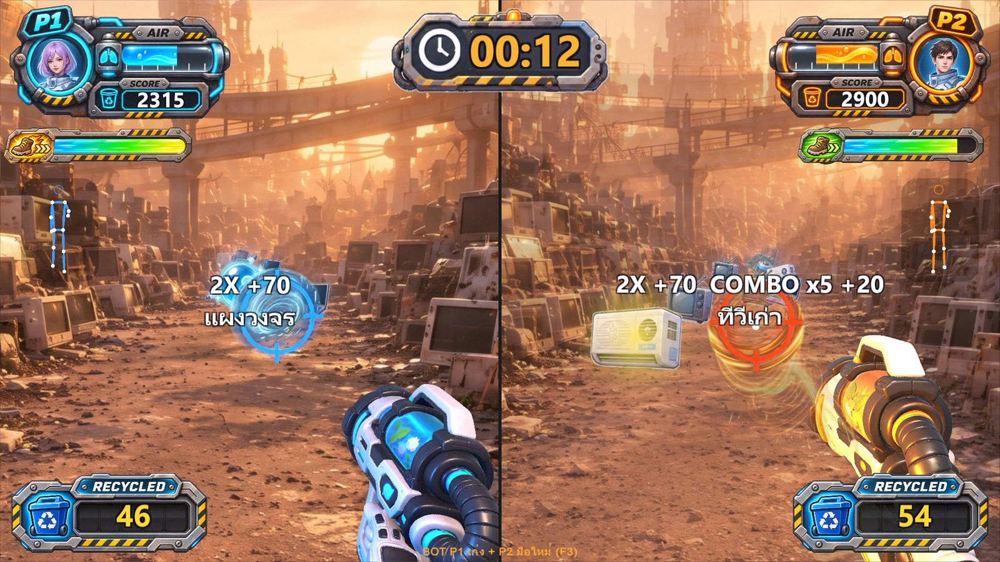
| กติกา | ทำงานอย่างไร |
|---|---|
| Combo | เก็บต่อเนื่อง 3 ชิ้น +10, 5 ชิ้น +20, 8 ชิ้น +40 ถ้าปล่อยขยะหลุดผ่านตัวไป Combo เริ่มใหม่ |
| ระยะดูดจำกัด | ดูดได้เฉพาะขยะที่เข้ามาใกล้แล้ว ทำให้การเดิน/เร่งมีความหมาย |
| คำเตือนตำแหน่ง | ออกนอกกล้อง หรือยืนใกล้กล้องเกิน 1.3 เมตร มีข้อความเตือนในฝั่งของผู้เล่นคนนั้น |
ป้าย WINNER พร้อมชื่อผู้ชนะ (PLAYER 1 / PLAYER 2) การ์ดของแต่ละคนแสดงคะแนน จำนวนรีไซเคิล และจำนวนครั้งที่ส่งอากาศให้เพื่อนสำเร็จ วงกลางแสดงเกจพร้อมป้าย CLEANER AIR (อากาศสะอาดขึ้นทั้งทีม) และดาว 1–3 ดวง ค้างไว้ 8 วินาทีแล้วไปภารกิจที่ 2
CLEANER AIR = สัดส่วนขยะที่ทีมเก็บได้จากที่เกิดขึ้นทั้งหมด + 2% ต่อการส่งอากาศให้เพื่อนสำเร็จ 1 ครั้ง (ไม่เกิน 100%) ทีมที่แบ่งอากาศกันจึงได้ดาวง่ายขึ้น
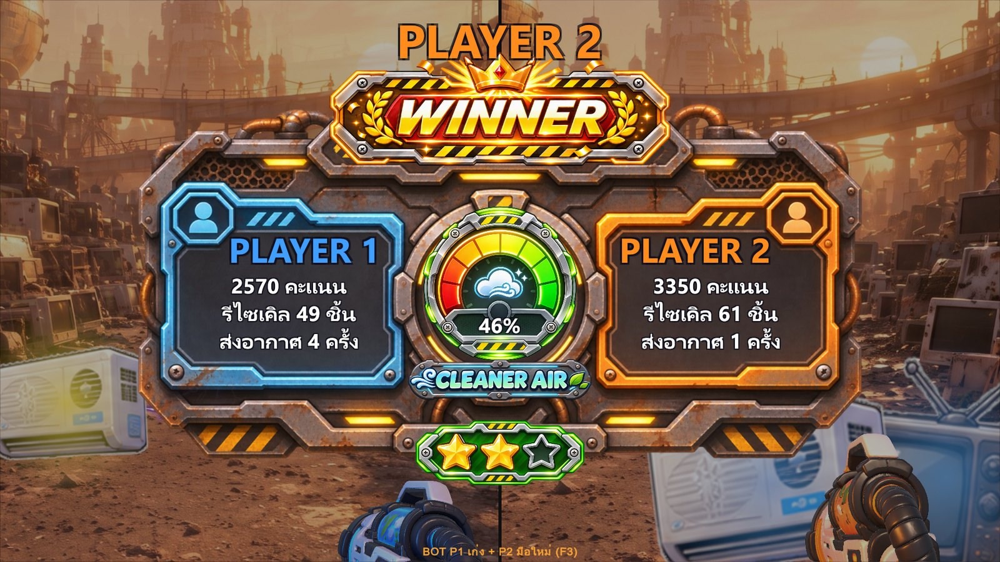
ทั้งสองคนสวมปลอกแขนแบบเดียวกัน ใช้ท่าเดียวกัน แต่ได้พลังคนละชนิด: P1 ซ้าย = Water Guardian P2 ขวา = Sun Guardian ไม่มีเวลาจำกัด เกมจบเมื่อต้นไม้โตครบ 100% เท่านั้น
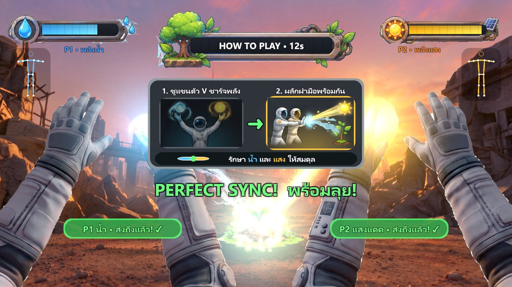

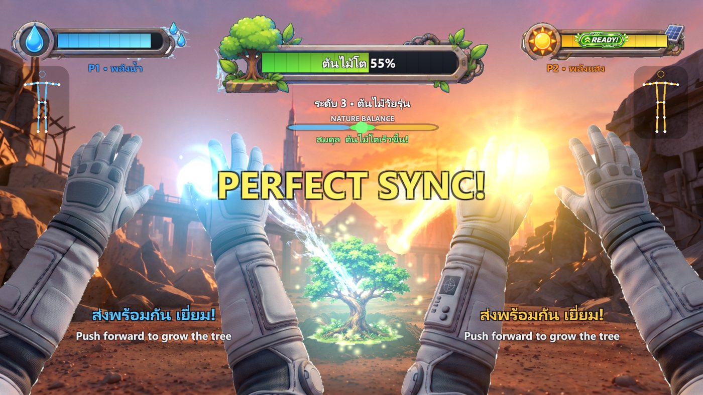
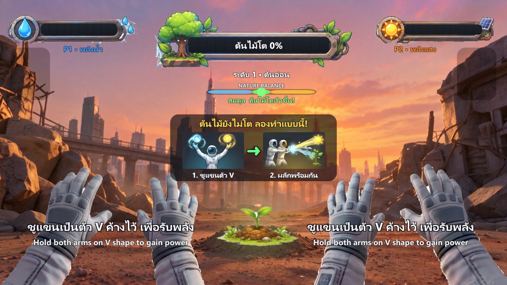
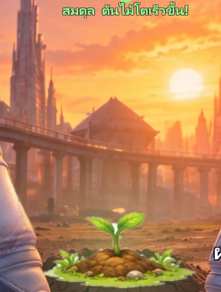
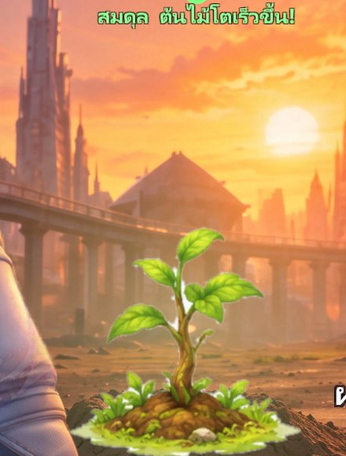
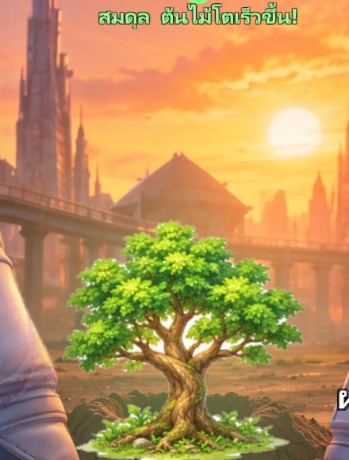
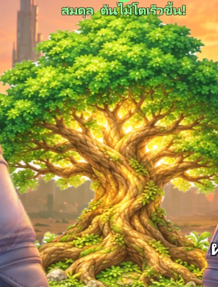
เมื่อต้นไม้โตครบ HUD และแขนจะหายไป 5 วินาที ฉากหลังค่อย ๆ เปลี่ยนเป็นเมืองที่ฟื้นแล้ว พร้อมกับต้นไม้ในเกมค่อย ๆ จางหายไป เหลือแต่ภาพเมืองที่ฟื้นแล้วเต็มจอ จากนั้นขึ้นป้าย TREE FULLY GROWN! การ์ดน้ำ/แสงแดด ความสมดุล สัดส่วนการส่งพร้อมกัน จำนวน PERFECT SYNC เวลาที่ใช้ และดาว แล้วกลับหน้าปกเพื่อรอผู้เล่นคู่ต่อไป
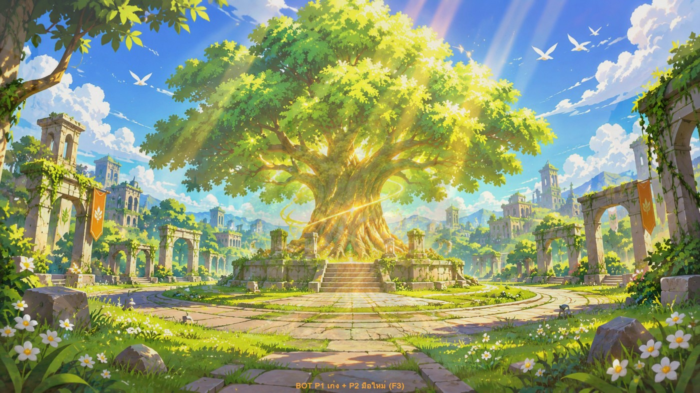
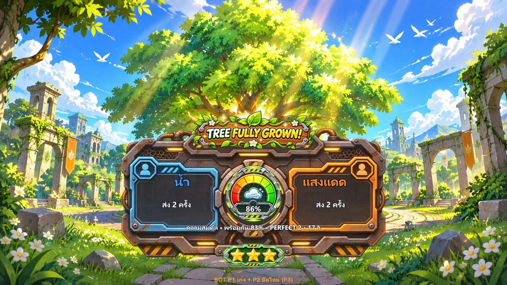
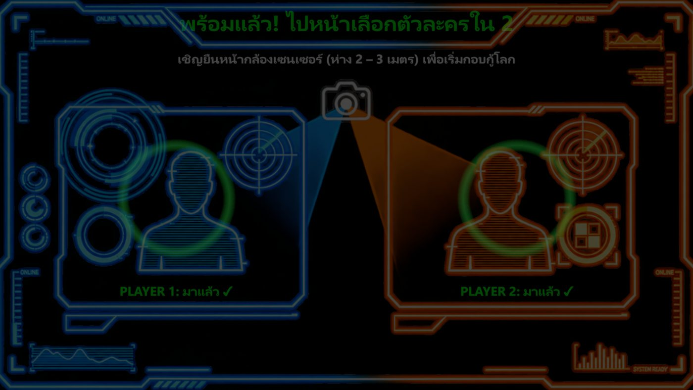
| Input (ผู้เล่นทำ) | Process (ระบบตีความ) | Output (บนจอ) |
|---|---|---|
| ยืนเข้าจุด P1 / P2 | สแกนระยะ 2.5–3 เมตร ยืนนิ่งในวงของตัวเอง 1 วินาทีจึงล็อกคนเข้าช่องตามฝั่ง ถ้ามีคนอื่นมาบังจะพักช่องไว้ ไม่ไปจับคนที่มาบัง | หน้าปกแสดง % การสแกน แล้วขึ้นสถานะพร้อม แล้วไปหน้าเลือกตัวละคร |
| ยกแขนค้าง 3 วินาที | แขนซ้าย = MALE แขนขวา = FEMALE ตัวที่ถูกเลือกแล้วคนอื่นเลือกซ้ำไม่ได้ | วงโหลดนับถอยหลัง โมเดล 3D ปรากฏบนแท่นสีของผู้เล่น |
| ชูแขนทั้งสองข้างค้าง 1 วินาที | READY CHECK: ข้อมือทั้งสองข้างสูงกว่าไหล่ พร้อมครบ 2 คนไปต่อทันที (ไม่มีใครทำ ไปต่อเองใน 8 วินาที) | ตัวละครเทเลพอร์ตเข้าเสาแสง วาร์ป การ์ด MISSION 01 แล้วแสงวาบเข้าหน้าสอนเล่น |
| ย่ำเท้าอยู่กับที่ | นับก้าวในช่วงสั้น ๆ แปลงเป็นความเร็วเดิน | ถนนเลื่อนเร็วขึ้น เกจรองเท้า 3 ระดับ |
| ยกมือและขยับมือ | เลือกมือที่ยก แปลงตำแหน่งมือเป็นจุดบนจอ | เครื่องดูด 3D ในมือข้างนั้น วงเล็งตามมือ |
| ดูดขยะสำเร็จ | คะแนนขยะ + Combo + ขยะพิเศษ × FEVER/FINAL RUSH | คะแนนลอยขึ้นแล้วจาง รีไซเคิล +1 |
| ดูดขยะช็อตไฟ | STUNNED 2 วินาที หักคะแนน รีเซ็ต Combo | ป้าย STUNNED สายฟ้ารอบปืน |
| เล็งค้างบนลูกอากาศ | ลูกต้องถึงพื้นและเข้าระยะดูด เล็งค้าง 0.35 วินาที = เก็บ (+30% / ลูกใบไม้ +50%) | วงโหลดรอบลูก ป้าย +AIR หลอด AIR เพิ่มขึ้น |
| ปัดมือผ่านลูกไปทางฝั่งเพื่อน | ความเร็วมือแนวนอนเกิน 1,800 พิกเซล/วินาที ขณะอยู่บนลูก = ส่ง เพื่อนรับได้ใน 4 วินาที ผู้ส่ง +15 คะแนน | ลูกพุ่งข้ามจอ ข้อความ "ส่งอากาศให้เพื่อน!" / "TEAM +15" |
| (ไม่ได้เก็บอากาศ) | AIR ลด 1.6%/วินาที ต่ำกว่า 25% เตือน ถึง 0% วงดูดและความเร็วเดินเหลือครึ่งหนึ่ง | หลอดแดงกะพริบ ขอบจอแดง "อากาศหมด! อ่อนแรง" |
| ครบ 90 วินาที | สรุปผู้ชนะ และคำนวณ CLEANER AIR ของทีม (ขยะที่เก็บได้ + โบนัสการส่งอากาศ) | หน้าสรุปผลพร้อมจำนวนส่งอากาศและดาว |
| Input (ผู้เล่นทำ) | Process (ระบบตีความ) | Output (บนจอ) |
|---|---|---|
| ชูแขนเป็นตัว V ค้างไว้ | ข้อมือทั้งสองสูงกว่าศีรษะและกางกว้างกว่าไหล่ ค้างพอจึงนับ | ลูกบอลน้ำ/แสงเหนือมือ เกจเพิ่ม ป้าย READY |
| ผลักฝ่ามือไปข้างหน้า | มือระดับอก แขนเหยียด หรือยื่นเข้าหากล้อง | สายน้ำ/ลำแสงพุ่งไปที่ต้นไม้ |
| ส่งพร้อมกัน / คนเดียว | พร้อมกันโตเต็มอัตรา คนเดียวโตช้าลง เริ่มเกือบพร้อมกัน = PERFECT SYNC | ป้าย TOGETHER! / WAIT FOR YOUR PARTNER |
| สัดส่วนน้ำกับแสง | Nature Balance: สมดุลได้โบนัส เอียงฝั่งเดียวโตช้าลง | เข็มบนแถบสมดุล ไอคอนน้ำน้อย/แสงน้อย |
| ไม่ทำท่า / ทำไม่ถูก | ต้นไม้ไม่โต 8 วินาที เตือน 15 วินาที เปิดตัวช่วย | การ์ดเตือนท่า ข้อความ "ช่วยเร่งพลังให้แล้ว!" |
| ผู้เล่นหลุดจากกล้อง | หยุดรับท่าของคนนั้น หายนานเกินไปกลับหน้าปก | คำเตือน "หลุดจากกล้อง" โครงกระดูกจางหาย |
| ต้นไม้ 100% | สรุปจำนวนครั้งที่ส่ง ความสมดุล การส่งพร้อมกัน เวลาที่ใช้ | ฉากจบ: ต้นไม้จางหาย เหลือเมืองที่ฟื้นแล้ว หน้าสรุปผล แล้วกลับหน้าปก |
ทดสอบทั้งเกมด้วยบอทจำลองผู้เล่น 2 คน (F3) ที่เล่นแบบคนจริง มีการตอบสนองช้า มือสั่น เล็งพลาด ลดแขนพัก และย่ำเท้าไม่สม่ำเสมอ
P1 ตั้งนิสัย "เก่ง" P2 ตั้งนิสัย "มือใหม่" ไม่ต้องเปิดกล้อง ทดสอบครบทุกหน้าจอตั้งแต่หน้าปกจนวนกลับหน้าปก ไม่พบ error
ภาพประกอบทุกภาพในรายงานฉบับนี้มาจากการรันทดสอบรอบล่าสุด เก็บไว้ที่ production/qa/evidence/report-2026-11-25/
ฉบับนี้ (v7) ทดสอบเพิ่มเติมด้วยบอทชุดเดิม: หน้าเลือกตัวละครโฉมใหม่ READY CHECK และเทเลพอร์ต (production/qa/evidence/launch-2026-11-26/),
ฉากจบที่ต้นไม้จางหาย (production/qa/evidence/finale-no-tree-2026-11-26/), เวลาเล่นที่สั้นลง (ภารกิจ 1 ครบ 90 วินาที, ภารกิจ 2 บอทเล่นจนต้นไม้โตเต็มในราว 70 วินาที) พร้อมภาพภารกิจ 1 ชุดใหม่ (production/qa/evidence/game1-90s-2026-11-26/) และเสียงเพลง/เอฟเฟกต์ทุกฉาก ไม่พบ error
ฉบับนี้ (v8) รันบอทชุดเดิม 1 รอบเต็ม ตั้งแต่หน้าปก เลือกตัวละคร สอนเล่น จนเล่นภารกิจ 1 ครบ 90 วินาทีและถึงหน้าสรุปผล
ระหว่างรอบเก็บภาพอัตโนมัติเป็นระยะ ผลที่ได้: ลูกอากาศตกลงถนนและบอทเล็งเก็บได้, บอทปัดส่งอากาศข้ามจอและเพื่อนรับได้จริง (P1 ส่ง 4 ครั้ง P2 ส่ง 1 ครั้ง),
หลอด AIR ลดเร็วขึ้นช่วง DUST STORM และหน้าสรุปผลแสดงจำนวนส่งอากาศกับป้าย CLEANER AIR ไม่พบ error ใน Console
ภาพสภาพอากาศหมดได้จากการสั่งทดสอบ noair ให้ P2 ที่วินาทีราว 51 เพราะบอทเก็บอากาศเก่งจนไม่หมดเอง
ภาพทั้งหมดเก็บไว้ที่ production/qa/evidence/air-system-2026-11-27/
ตัวเลขในรายงานปรับได้ใน Inspector: ภารกิจ 1 ที่ GameSettings (เวลาต่อรอบ, FINAL RUSH, เวลาอีเวนต์, ระยะดูด, ขนาดวงเล็ง OVERDRIVE และหัวข้อ "อากาศ (AIR)": อัตราลด, ค่าเติมต่อลูก, ความถี่ลูก, เวลารับลูกจากเพื่อน, ความเร็วปัด, TEAM bonus, ผลตอนอากาศหมด) และภารกิจ 2 ที่ SeedSettings (ความเร็วชาร์จ/ส่ง, ShowTimer, ตัวช่วยเมื่อต้นไม้ไม่โต) ถ้าปรับค่าแล้วควรอัปเดตรายงานให้ตรงกัน